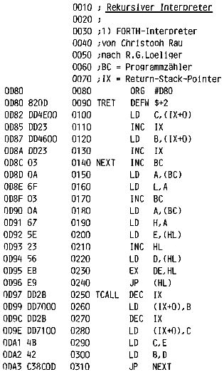

Nascom Journal |
Februar 1982 · Ausgabe 2 |
Die folgenden Hinweise sind für diejenigen gedacht, die sich nicht nur für die Anwendung sondern auch für den inneren Aufbau des FORTH-Interpreters interessieren.
Die Routinen NEXT, TCALL und TRET bilden zusammen einen kleinen rekursiven Interpreter. NEXT ruft jeweils das nächste Unterprogramm auf (sowohl Maschinencode als auch Threaded Code) und ist somit die am häufigsten benutzte Routine. TCALL und TRET leiten jede Threaded-Code-Routine ein bzw. beenden sie. Es ist klar, daß die Arbeitsgeschwindigkeit des ganzen Systems hauptsächlich von der Geschwindigkeit dieser drei Routinen bestimmt ist. Hier die Arbeitsgeschwindigkeit der jeweiligen Routinen in Taktzyklen:
NEXT: 90 TCALL: 104 TRET: 88
Christoph Rau, der Ihnen allen durch sein schönes Reversi-Programm bekannt ist, arbeitet ebenfalls an einer FORTH-Version. Seine entsprechenden Routinen sind um ein Erhebliches schneller, haben aber den Nachteil, daß die Register BC und IX ständig von diesen Routinen belegt sind und deshalb nicht anderweitig verwendet werden können. Hier die Arbeitsgeschwindigkeit in Taktzyklen:
NEXT: 62 TCALL: 74 TRET: 58
Bei dem Versuch, einen entsprechenden Interpreter für einen anderen Prozessor zu entwerfen, kam ich noch zu einer anderen Form eines rekursiven Interpreters, der aber mit dem CALL-Befehl arbeitet, wodurch der Stack nicht mehr für die Parameterübergabe benutzt werden kann. Es muß dann eine Art „Ersatz-Stack“ konstruiert werden, der zwar langsamer arbeitet, aber auch für größere Datenformate (Strings, BCD-Zahlen) geeignet ist. Ein weiterer Vorteil ist, daß alle Unterprogramme (sowohl in Maschinen- als auch im Threaded Code) von anderen Programmen mit einfachen CALL-Befehlen aufgerufen werden können. Dies ist möglich, weil bei dieser Interpreterversion Maschinencode-Unterprogrammen nicht mehr ihre Startadresse vorangestellt werden muß, und weil Threaded-Code-Routinen mit „CALL TCALL“ statt mit „DEFW TCALL“ beginnen. Beide Interpreter folgen unten im Assemblertext, und ich mache hier lieber Schluß, da sonst das Nascom-Journal womöglich noch des „esoterischen Rekursivismus“ beschuldigt wird.
Arbeitsgeschwindigkeit der Interpreterroutinen:
NEXT: 80 TCALL: 33 TRET: 38
Februar 82 G.K.
| Seite 19 von 32 |
|---|